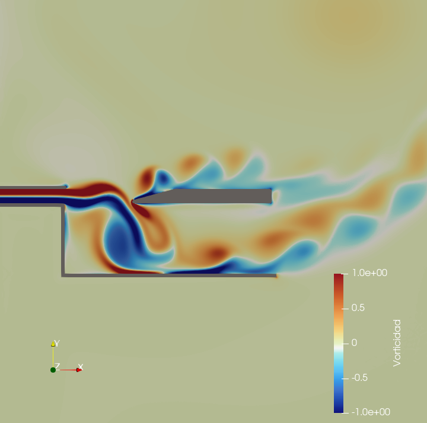
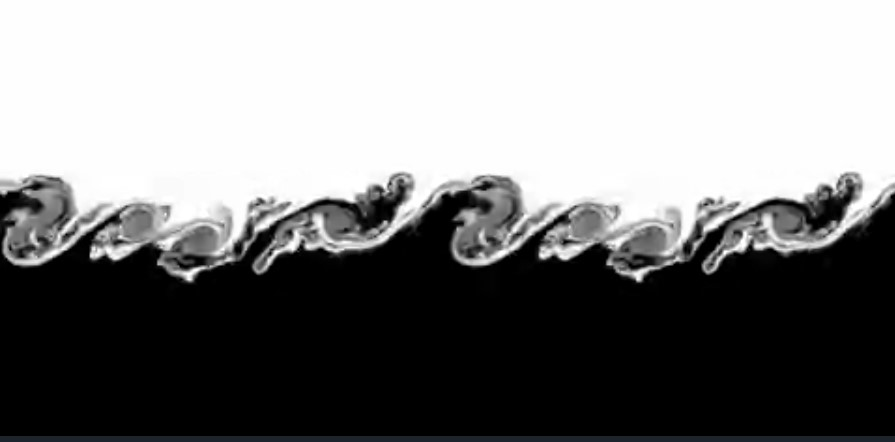
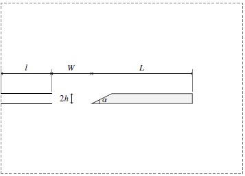
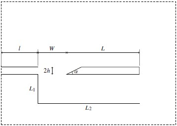
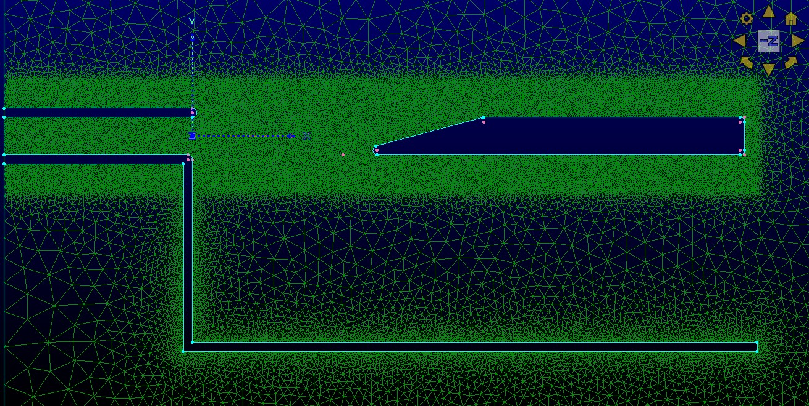
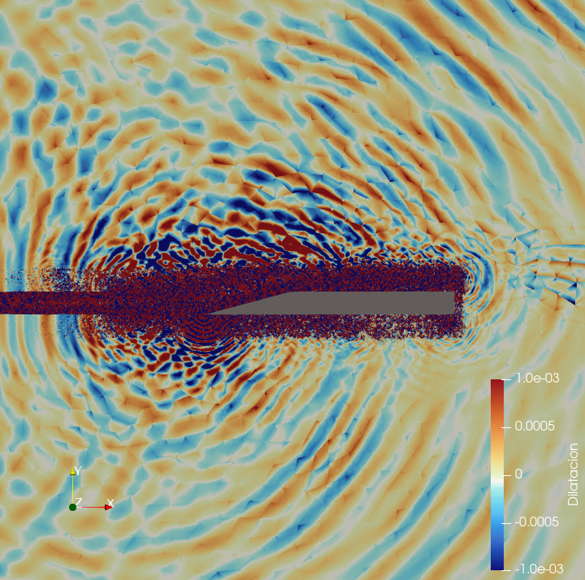
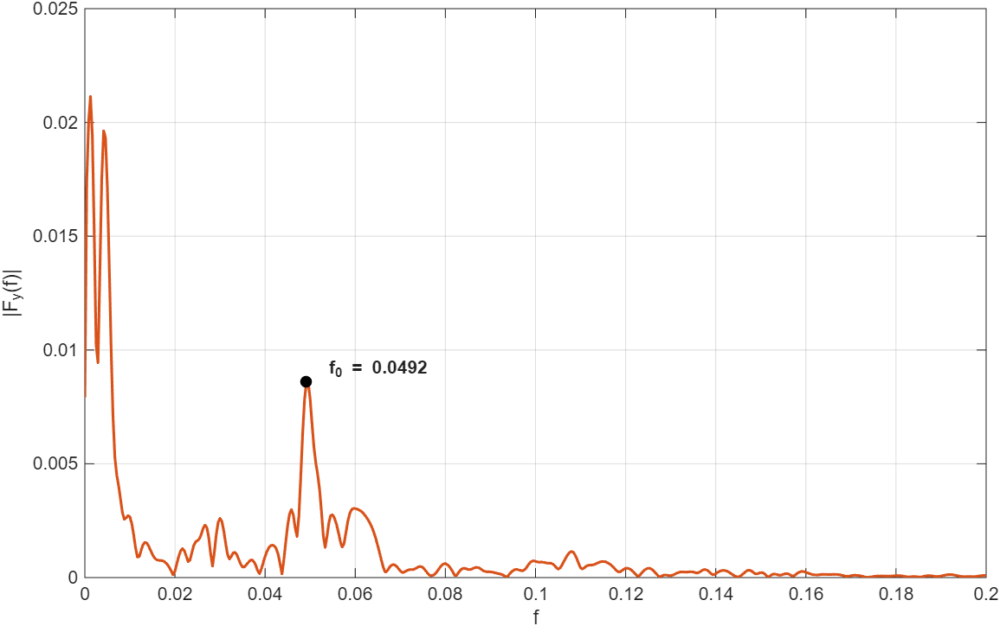
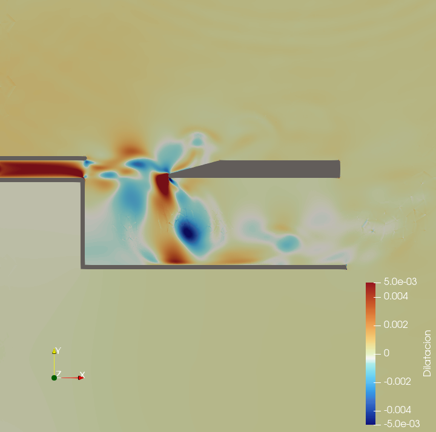
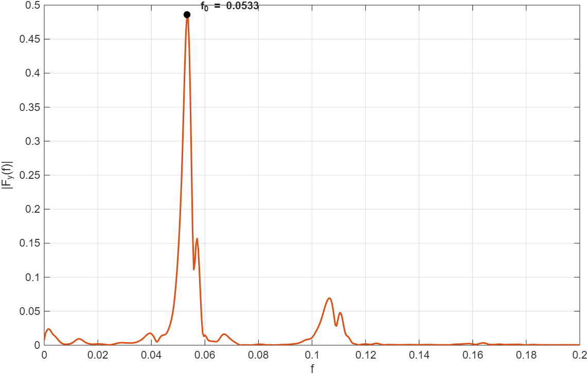

TFG · Ingeniería Aeroespacial · UCA
Investigación, modelado numérico y análisis físico de alta fidelidad del comportamiento aerodinámico y aeroacústico acoplado en instrumentos de bisel bajo regímenes de bajo número de Mach (DNS).

La simulación numérica de instrumentos de viento madera de tipo flauta representa un reto clásico de la física de fluidos. La generación de sonido no depende de una membrana mecánica activa, sino de una inestabilidad puramente hidrodinámica acoplada de forma resonante con la acústica del sistema.
Este proyecto aborda el estudio utilizando Dinámica de Fluidos Computacional (CFD) basada en el esquema de Reconstrucción de Flujo (FR) de alto orden espacial. Se simula de forma directa (DNS) la interacción no lineal compleja entre el chorro de aire insuflado y la cuña del instrumento, capturando con precisión los fenómenos de inestabilidad y el bucle de realimentación acústica.
El flujo se rige por las ecuaciones de Navier-Stokes para fluidos compresibles en formulación 2D. El régimen aerodinámico del estudio se define por dos números adimensionales clave:
La dinámica fundamental se basa en la amplificación de perturbaciones en la capa de cizalladura. El flujo desarrolla la conocida inestabilidad de Kelvin-Helmholtz, que se manifiesta mediante el enrollamiento progresivo del fluido en vórtices discretos (fenómeno de roll-up). La formación alternada de estas estructuras de vorticidad excita acústicamente el instrumento al colisionar rítmicamente contra la cuña.

Para resolver el flujo compresible no estacionario con alta fidelidad sin recurrir a costosos modelos de turbulencia (enfoque DNS), se configuró una cadena de herramientas de última generación:
Generación del mallado multi-bloque de alta resolución y control paramétrico de la geometría con densificación local en zonas de interés aeroacústico.
Simulación Numérica Directa (DNS) con esquemas Flux Reconstruction / Galerkin Discontinuo de alto orden. Ejecución sobre arquitecturas aceleradas con solvers de Riemann HLLC (CUDA/OpenMP).
Análisis y visualización 3D de campos físicos: vorticidad, dilatación acústica, líneas de corriente y campos ondulatorios de presión.
Extracción de la frecuencia fundamental mediante FFT con ventanado de Hann. Análisis de históricos de fuerza sustentadora e identificación de picos espectrales.
El proyecto simula comparativamente dos escenarios: el Caso 1, donde el chorro interactúa con el bisel en campo libre; y el Caso 2, que introduce una pared sólida inferior que confina el flujo y modifica drásticamente su desarrollo hidrodinámico.


Geometría adimensionalizada respecto a la anchura del canal de insuflación ($W$):
| Símbolo | Descripción geométrica | Valor adimensional |
|---|---|---|
| $l$ | Longitud del canal de insuflación | 10h |
| $W$ | Anchura del canal de insuflación | 8h |
| $L$ | Distancia desde salida del canal hasta el bisel | ≈ 20h |
| $h$ | Desplazamiento vertical de la punta de la cuña | 0,5 |
| $\alpha$ | Ángulo de apertura de la cuña deflectora | 15° |
| $L_1$ | Profundidad del confinamiento inferior | 10h |
| $L_2$ | Longitud de la pared inferior de confinamiento | 30h |
Los esquemas FR/DG de alto orden son extremadamente sensibles a singularidades geométricas. Las esquinas vivas inducen oscilaciones espurias tipo Gibbs y divergencia catastrófica (presiones negativas no físicas). Se aplicó un redondeo analítico continuo ($R_c = 0{,}12$) en 6 esquinas críticas del bisel, estabilizando el cálculo sin alterar la física global.
La malla estructurada multi-bloque densifica drásticamente las celdas en el entorno de la embocadura para capturar la capa límite laminar y la estela turbulenta generada tras la cuña.

El corte periódico del chorro desencadena un dipolo aeroacústico puro. Mediante sensores virtuales e integración de fuerzas sobre el bisel, se extrajo el histórico temporal de la fuerza sustentadora $F_y(t)$. Tras el transitorio inicial ($t < 400$), la oscilación alcanza equilibrio dinámico estable con período $T \approx 20$.
El análisis espectral (FFT con ventanado de Hann) detectó una frecuencia fundamental muy limpia: $f_0 = 0{,}0492$ ($St_W = 0{,}1968$).


La pared sólida inferior canaliza el flujo lateral e induce un efecto de atracción viscosa que reduce la deformación asimétrica del chorro. El confinamiento incrementa la rigidez del bucle aeroacústico, elevando la frecuencia y enriqueciendo los armónicos secundarios.


El esquema FR de alto orden demostró excelente estabilidad para capturar fluctuaciones acústicas sin disipación artificial. Los números de Strouhal obtenidos ($St \approx 0{,}18 – 0{,}21$) concuerdan con los rangos experimentales de la literatura aeroacústica, validando la precisión de PyFR sin costes experimentales. El confinamiento queda demostrado como factor que rigidiza la respuesta en frecuencia del instrumento en un 8,3%.